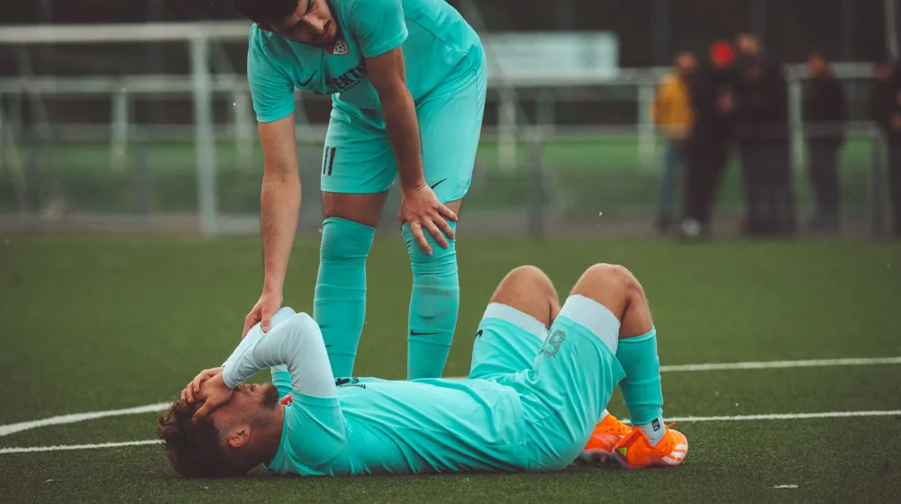

운동 후 통증, 단순 근육통 vs 부상 구분하는 4가지 기준
사진: Juan Manuel Montejano Lopez / Pexels (무료 이미지, 출처 표기)
운동 후 통증, 단순 근육통과 부상의 결정적 차이

운동을 마친 다음 날 몸이 뻐근하면 뿌듯함을 느끼곤 합니다. 하지만 이 통증이 근육이 발달하는 과정에서 생기는 자연스러운 신호인지, 아니면 몸이 망가지고 있다는 경고인지 구분하기란 쉽지 않습니다. 무리하게 운동을 이어가다가 힘줄이나 인대가 파열되는 심각한 만성 부상으로 이어질 수 있으므로 주의해야 합니다.
가장 먼저 구분해야 할 것은 통증이 나타난 '시점'과 '양상'입니다. 단순 근육통은 보통 운동을 마친 뒤 12시간에서 24시간이 지난 후 서서히 시작됩니다. 이를 의학 용어로 DOMS(지연성 근육통, 운동 후 일정 시간이 지나 나타나는 근육 통증)라고 부릅니다. 반면 부상은 운동하는 도중 갑자기 '툭' 하는 느낌과 함께 통증이 찾아오거나, 특정 동작을 할 때 찌르는 듯한 날카로운 느낌이 드는 것이 특징입니다.
근육통 vs 부상 한눈에 비교하는 체크리스트
내가 느끼는 통증이 어느 쪽에 가까운지 아래 비교표를 통해 자가진단해 볼 수 있습니다. 내 몸의 신호와 대조해 보시기 바랍니다.
위 표에서 '부상' 항목에 해당하는 증상이 많다면 즉시 운동을 중단해야 합니다. 특히 통증 부위가 붉게 변하거나 부풀어 오르고 열감이 느껴진다면 관절 내부나 인대에 염증 및 미세 파열이 발생했을 가능성이 매우 높습니다.
부상이 의심될 때 즉시 실천해야 하는 RICE 응급처치
근육통이 아닌 부상으로 의심되는 통증이 발생했다면, 초기 대처가 만성화를 막는 열쇠가 됩니다. 스포츠 의학 분야에서 권장하는 표준 응급처치법인 RICE 법칙을 즉시 적용해야 합니다. 2026년 기준 스포츠 재활 의학계에서도 초기 48시간 이내의 RICE 처치를 가장 강조하고 있습니다.
- R (Rest, 안정): 통증이 있는 부위를 더 이상 사용하지 않고 즉시 휴식을 취합니다. 억지로 움직여 통증을 참는 것은 손상 부위를 넓힐 뿐입니다.
- I (Ice, 냉찜질): 부종과 염증을 가라앉히기 위해 얼음주머니를 수건에 싸서 통증 부위에 대어 줍니다. 한 번에 15~20분씩, 하루 3~4회 실시합니다. 온찜질은 초기 부종을 악화시키므로 피해야 합니다.
- C (Compression, 압박): 탄력붕대 등을 이용해 부상 부위를 가볍게 압박하여 추가적인 부종을 예방합니다. 너무 조여 피가 통하지 않게 하지 않도록 주의합니다.
- E (Elevation, 거상): 부상 부위를 심장보다 높은 위치에 올려놓아 혈류가 쏠려 붓는 현상을 방지합니다. 누운 상태에서 다리 밑에 베개를 바치는 방법이 좋습니다.
이럴 때는 참지 말고 당장 병원으로 가야 합니다
경미한 염좌(관절을 지지하는 인대가 늘어나거나 미세하게 찢어지는 손상)는 자가 관리로 호전되기도 하지만, 특정 신호가 나타나면 지체 없이 정형외과나 재활의학과 전문의를 찾아야 합니다. 정형외과 학계의 임상 권고에 따르면 아래 증상은 단순 휴식으로 해결되지 않는 정밀 진단 대상입니다.
첫째, 관절에 체중을 싣고 서 있거나 걷는 것 자체가 불가능할 때입니다. 발목이나 무릎을 다쳤을 때 딛기조차 힘들다면 뼈의 미세 골절이나 인대 완파를 의심해야 합니다. 둘째, 관절을 움직일 때 안에서 무언가 걸리는 듯한 느낌이 나거나 '덜컥' 하는 불안정성이 느껴지는 경우입니다. 이는 반월상 연골판 손상이나 십자인대 파열의 대표적 징후입니다. 셋째, 통증 부위 주변의 감각이 둔해지거나 저릿저릿한 신경 증상이 동반될 때입니다. 이는 단순 근육 손상이 아니라 신경이 눌리고 있다는 신호이므로 빠른 검사가 필요합니다.
부상을 예방하기 위해서는 평소 운동 전후로 충분한 동적 스트레칭을 수행하고, 본인의 체력을 넘어서는 무리한 중량이나 강도는 피해야 합니다. 내 몸이 보내는 작은 경고를 무시하지 않는 것이 오랫동안 건강하게 운동을 즐기는 비결입니다.
🔗 이 글도 함께 보면 좋아요: 암보험 가입 전 '이것' 모르면 손해봅니다! 필수 체크리스트 4가지
관련 추천 상품
이 포스팅은 쿠팡 파트너스 활동의 일환으로, 이에 따른 일정액의 수수료를 제공받습니다.
자주 묻는 질문(FAQ) (탭하면 펼쳐져요)
Q1. 가벼운 근육통(DOMS) 상태라면 저강도 유산소 운동이나 가벼운 스트레칭은 오히려 혈액 순환을 도와 회복에 긍정적인 영향을 줍니다. 하지만 통증이 심해 제대로 된 자세가 나오지 않는다면 운동을 쉬는 것이 안전합니다. 자세가 무너지면 다른 관절에 부하가 걸려 진짜 부상으로 이어질 수 있습니다.
A.
Q2. 통증 발생 후 초기 48시간 이내에는 염증을 가라앉히고 부종을 막기 위해 냉찜질(아이싱)을 해야 합니다. 반면, 부종이 없고 발생한 지 3일 이상 지난 만성 통증이거나 단순 근육 뭉침 현상일 때는 혈액 순환을 촉진하고 근육을 이완시켜 주는 온찜질이 효과적입니다.
A.
Q3. 아닙니다. 단순 지연성 근육통(DOMS)은 아무리 길어도 5~7일 이내에 자연스럽게 사라집니다. 만약 특정 부위의 통증이 2주 이상 지속된다면 근막 파열, 힘줄염, 혹은 미세 골절과 같은 부상일 확률이 높으므로 병원 진료를 받아보셔야 합니다.
A.
한눈에 보는 상품 목록
재사용 가능한 무릎 관절용 아이스 팩
운동 후 갑작스러운 관절 통증이나 부종 발생 시 밀착하여 열감을 내릴 수 있는 벨크로 고정식 냉찜질 팩입니다.
스포츠 압박 붕대
부상 부위의 부종을 예방하고 관절을 단단하게 고정해 주는 신축성이 뛰어난 자가점착식 압박 붕대입니다.